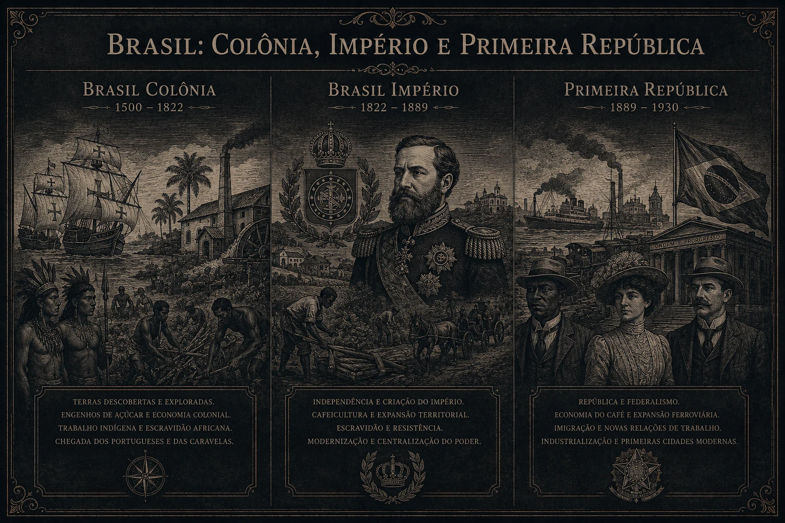

Fezes de cavalo na roupa
Sem sabão? Sem problema. Lavadeiras misturavam fezes de cavalo com gordura pra "clarear" sua camisa branca. Era assim que a elite andava limpa.
Da Colônia á Primeira República

Sem sabão? Sem problema. Lavadeiras misturavam fezes de cavalo com gordura pra "clarear" sua camisa branca. Era assim que a elite andava limpa.
Pegou sífilis? O médico passava mercúrio na sua pele. O remédio era tão venenoso que matava mais que a doença. Isso era "ciência" no Brasil Colônia.
Com febre? Te cortavam. Com dor de cabeça? Te cortavam. A solução pra tudo era abrir o braço e tirar o "sangue ruim" com sanguessuga.
Era normal ver família inteira sentada na calçada, de tarde, se catando. Higiene era luxo e piolho era companhia.
Esquece CRM. Quem curava era barbeiro-cirurgião, benzedeira e curandeiro. Se sobrevivesse, era lucro.
Garfo era coisa de rei. Rico, pobre e escravo comiam feijão e carne com a mão mesmo. Talher era pra ostentar.
Casa de gente rica tinha "escarradeira" de porcelana na sala. Visita chegava e já cuspia ali no meio da conversa.
Mulher tinha que ficar trancada atrás do muxarabi. Resultado: casa escura, abafada e com cheiro de mofo e suor.
Andar descalço era obrigatório. Resultado: todo mundo com o pé cheio de bicho-de-pé inflamado e infeccionado.
Precisava mijar? Jogava o penico pela janela. E rezava pra não acertar ninguém na rua. Era o sistema de esgoto oficial.
Escravizados carregavam tonéis de fezes nas costas pra jogar no mar. O líquido vazava e manchava o corpo e as roupas. Daí o apelido.
Nem palácio tinha banheiro. Era penico. E quem esvaziava era o escravizado.
As ruas eram iluminadas com lampiões que queimavam gordura de baleia. A cidade inteira cheirava a peixe morto à noite.
Quer fugir do imposto do ouro? Esconde dentro de uma estátua de santo. Por isso até hoje chamamos hipócrita de "santo do pau oco".
Morto ia pra debaixo do piso da igreja. Na missa o cheiro era tão forte que queimavam erva pra disfarçar.
Pra arrancar confissão a Inquisição cortava a sola do pé e colocava perto do fogo. Justiça da época.
Menina de 12 anos casava com homem de 40. Era lei, era negócio e era "normal".
Tinha espião em tudo. Se suspeitassem que você era judeu secreto ou "pecador", te mandavam acorrentado pra Lisboa pra ser julgado.
Negro e indígena nem sonhava em entrar. A segregação era lei e estava em cada porta da cidade.
Origem: Santos ocos pra esconder ouro do "quinto".
Hoje: Pessoa falsa e hipócrita.
Origem: Escravizados soltavam ouro no rio ao lavar éguas.
Hoje: Se dar bem, levar vantagem.
Origem: Casas de pobre que nem telhado direito tinham.
Hoje: Pessoa sem nada, na miséria.
Origem: Imposto de 20% sobre o ouro. Todo mundo odiava.
Hoje: Lugar horrível e distante.
Origem: "Relação" era o nome do tribunal da colônia.
Hoje: Brigar de casal.
Origem: Taberna vendia carne de gato dizendo que era lebre.
Hoje: Passar golpe, enganar.
O e-book traz curiosidades exclusivas e uma análise política completa para garantir o seu sucesso na prova."
Quero o E-book Completo"Na engrenagem do Império Português, o desterro colonial não estava livre da vigilância da fé. O Tribunal da Inquisição não possuía um edifício fixo na colônia, mas a sua autoridade fazia-se presente através do temido sistema de Visitações. Ao desembarcarem no Brasil, os visitadores do Santo Ofício publicavam os 'Éditos de Fé', obrigando a população a denunciar vizinhos, parentes e amigos sob pena de excomunhão. O foco principal recaía sobre práticas consideradas desviantes, como a feitiçaria, a heresia e o criptojudaísmo. Sob o pretexto de salvar a alma do réu, o processo inquisitorial utilizava o isolamento rigoroso e o suplício físico como ferramentas psicológicas, destruindo a resistência do acusado até que ele confessasse os seus supostos pecados e entregasse novos cúmplices para os tribunais de Lisboa."
O preso era amarrado deitado. Cordas nos braços e pernas eram ligadas a um eixo. Ao girar a manivela, as cordas esticavam os membros, deslocando ombros, cotovelos e joelhos com dores insuportáveis.
Mãos amarradas nas costas. O prisioneiro era içado por uma roldana e solto em queda brusca. O impacto deslocava os ombros. Se não confessasse, amarravam pesos de ferro nos pés para a próxima queda.
Pés e mãos amarrados juntos atrás das costas, forçando o corpo a se dobrar como um arco. Mantido por horas, causava cãibras violentas, sufocamento e dores intensas na coluna.
Os pés eram untados com gordura e presos em cepos. O carrasco aproximava brasas ou ferro fervendo da sola. A gordura fritava a pele até o réu confessar e listar vizinhos e parentes no Brasil.
Meses em celas escuras, úmidas e frias. Sem saber data, hora ou do crime. Sem falar com ninguém além de guardas e inquisidores.
Interrogatórios agressivos alternados com falsa empatia. Prometiam liberdade se confessasse e entregasse outros "hereges". A confissão apenas confirmava a culpa e a perda dos bens.
Um médico e um cirurgião acompanhavam a tortura. Não para aliviar a dor, mas para monitorar o pulso e garantir que o preso não morresse antes de confessar. Se desmaiasse, voltava dias depois.
Escrivães anotavam tudo: gritos, súplicas, orações e o momento que os ossos estalavam. Esses registros dos brasileiros enviados a Portugal sobrevivem hoje no Arquivo da Torre do Tombo, em Lisboa.
No e-book eu mostro os processos reais, nomes e o que aconteceu com cada um.
Ver Casos Reais no E-book